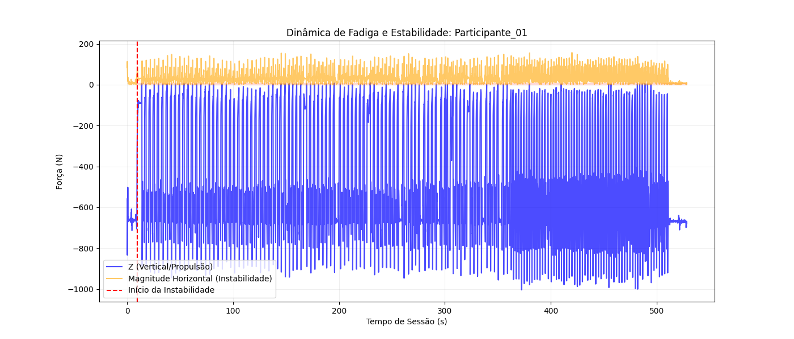
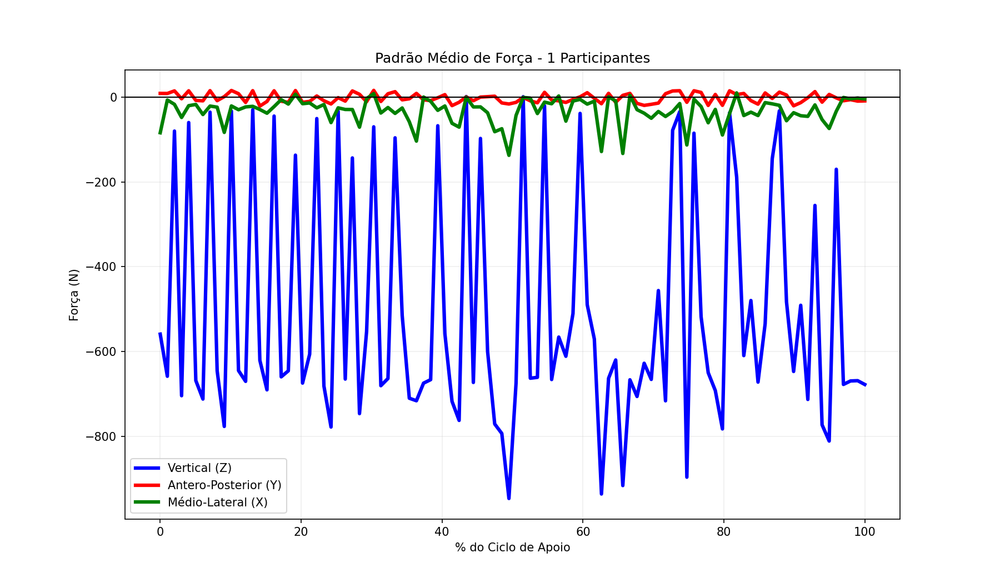

Plataforma de Força
Force Platform
Forças de reação ao solo (GRF) e centro de pressão (COP) durante o protocolo STS, avaliando alterações no padrão de carga e equilíbrio associadas à fadiga muscular.
Ground reaction forces (GRF) and center of pressure (COP) during the STS protocol, assessing loading pattern and balance changes associated with muscle fatigue.
Componentes vertical, ântero-posterior e médio-lateral durante o movimento de Sentar e Levantar. Adicione seus dados substituindo o canvas pelo gráfico.
Vertical, antero-posterior, and medio-lateral components during the Sit-to-Stand movement. Replace the canvas with your chart/data.

Deslocamento do COP durante equilíbrio estático e dinâmico como indicador de estabilidade postural.
COP displacement during static and dynamic balance as a postural stability indicator.

Vídeos — Plataforma de Força
Videos — Force Platform

